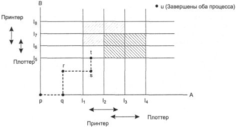
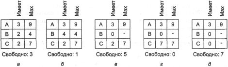
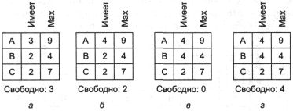
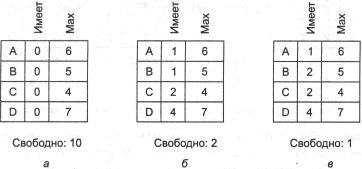
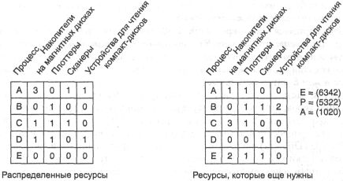

Избежание взаимоблокировок
Рассматривая обнаружение взаимоблокировок, мы неявно предполагали, что когда
процесс запрашивает ресурсы, он требует их все сразу (матрица R на рис.
3.4). Однако в большинстве систем ресурсы запрашиваются поочередно, по одному.
Система должна уметь решать, является ли предоставление ресурса безопасным или
нет, и предоставлять его процессу только в первом случае. Таким образом, возникает
новый вопрос: существует ли алгоритм, который всегда может избежать ситуации
взаимоблокировки, все время делая правильный выбор? Ответом является условное
«да» — мы можем избежать тупиков, но только если заранее будет доступна
определенная информация. В этом разделе мы изучим способы уклонения от взаимоблокировок
с помощью аккуратного предоставления ресурсов.
Траектории ресурсов
Основные алгоритмы, позволяющие предотвращать взаимоблокировки, базируются на
концепции безопасных состояний. Перед тем как начать описывать алгоритм, сделаем
небольшое отступление, чтобы взглянуть на идею безопасности с точки зрения простого
для понимания графического метода. Несмотря на то что графический подход не
переносится напрямую в пригодный к употреблению алгоритм, он дает прекрасное
интуитивное понимание существа вопроса.
На рис. 3.6 представлена модель для системы с двумя процессами и двумя ресурсами,
например принтером и плоттером. Горизонтальная ось отображает номера команд,
выполняемых процессом Л. По вертикальной оси показаны номера
команд, выполняемых процессом В. В команде I1 процесс
А запрашивает принтер, в команде I2 ему требуется плоттер.
Принтер и плоттер освобождаются командами I3 и I4
соответственно. Процессу В необходим плоттер с команды I5
по команду I7 и принтер с команды I6 по
команду I8.
Каждая точка на диаграмме представляет совместное состояние двух процессов.
Изначально система находится в точке р, когда ни один процесс еще не
выполнил ни одну инструкцию. Если планировщик запустит процесс А первым,
мы попадем в точку q, в которой процесс А выполнил какое-то количество
команд, а процесс В еще ничего не сделал. В точке q траектория
становится вертикальной, показывая, что планировщик решил запустить в работу
процесс В. При наличии одного процессора все отрезки траектории могут
быть только вертикальными или горизонтальными, но не наклонными. Кроме того,
движение всегда происходит на север или восток (вверх и вправо), и никогда на
юг или запад (вниз и влево), так как процессы не могут работать в обратном направлении.
Когда процесс А пересекает линию I1 на отрезке от
точки r до точки s, он запрашивает и получает принтер. Когда процесс
В достигает точки t, он запрашивает плоттер.

Рис. 3.6. Две траектории
ресурсов процессов
Особенно интересны заштрихованные области. Область со штриховкой из верхнего
левого угла в правый нижний представляет промежуток времени, когда оба процесса
занимают принтер. Правило взаимного исключения делает попадание в эту область
невозможным. Вторая заштрихованная область соответствует тому, что оба процесса
используют плоттер, и это также невозможно.
Если система войдет в прямоугольник, ограниченный линиями I1
и I2 по сторонам и линиями I5 и I6
сверху и снизу, она в конце концов доберется до пересечения линий I2
и I6, попадет в тупик. В этот момент процесс А запросит
плоттер, а процесс В потребует принтер, но оба ресурса будут к тому времени
заняты. Получается, что небезопасным является целый прямоугольник, и в него
нельзя входить. В точке t
единственно безопасный вариант состоит в том, чтобы оставить процесс А
работать до тех пор, пока он не достигнет команды I4. После
нее любая траектория дойдет до точки и.
Важный для понимания момент заключается в том, что в точке t процесс
В запрашивает ресурс. Система должна принять решение: предоставлять его
или нет. Если выдается разрешение, система попадает в небезопасную область и
в итоге блокируется. Чтобы избежать тупика, нужно приостановить процесс В
до тех пор, пока процесс А не запросит и не освободит плоттер.
Безопасные и небезопасные состояния
Алгоритмы предотвращения взаимоблокировок, которые мы будем изучать дальше,
используют информацию рис. 3.4. В любой момент времени существует текущее состояние,
составленное из величин Е, А, С и R. Говорят, что состояние безопасно,
если оно не находится в тупике и существует некоторый порядок планирования,
при котором каждый процесс может работать до завершения, даже если все процессы
вдруг захотят немедленно получить свое максимальное количество ресурсов. Проще
всего проиллюстрировать эту идею на примере с одним ресурсом. На рис. 3.7, а
у нас есть состояние, в котором процесс А занимает 3 экземпляра ресурса,
но ему в итоге могут потребоваться 9 экземпляров. Процесс В в настоящий
момент занял 2 экземпляра, но позже ему могут понадобиться всего 4. Процесс
С владеет двумя, но может потребовать еще 5 штук. В системе есть всего
10 экземпляров данного ресурса, 7 из них уже распределены, три пока свободны.

Рис. 3.7. Демонстрация
того, что состояние а безопасно
Состояние на рис. 3.7, а безопасно, потому что существует такая последовательность
предоставления ресурсов, которая позволяет завершиться всем процессам. А именно,
планировщик может просто запустить в работу только процесс В на то время,
пока он запросит и получит два дополнительных экземпляра ресурса, что приведет
к состоянию, изображенному на рис. 3.7, б. Когда процесс В закончится,
мы получим состояние рис. 3.7, в. Затем планировщик может запустить процесс
С, что со временем приведет нас к ситуации рис. 3.7, г. По завершении
процесса С мы получим рис. 3.7, д. Теперь процесс А наконец
может занять необходимые ему шесть экземпляров ресурса и также успешно завершиться.
Таким образом, состояние на рис. 3.7, а является безопасным, потому что
система может избежать тупика с помощью аккуратного планирования процессов.
Теперь предположим, что исходное состояние системы продемонстрировано на
рис. 3.8, а, но в данный момент процесс А запрашивает и получает
еще один ресурс, приводя к рис. 3.8, б. Сможем ли мы найти последовательность,
которая гарантирует работу системы? Давайте попытаемся. Планировщик может дать
проработать процессу В до того момента, пока он не запросит все свои
ресурсы, как показано на рис. 3.8, в.

Рис. 3.8. Демонстрация
того, что состояние б небезопасно
В итоге процесс В успешно завершается и мы получаем ситуацию рис.
3.8, г. В этом месте мы застряли: в системе осталось только четыре свободных
экземпляра ресурса, а каждому из активных процессов необходимо пять. И не существует
последовательности действий, гарантирующей успешное завершение всех процессов.
Следовательно, решение о предоставлении ресурса, которое передвинуло систему
из положения рис. 3.8, а к рис. 3.8, б, привело ее из безопасного
в небезопасное состояние. Если из ситуации рис. 3.8, б запустить процесс
А или С, мы не выйдем из тупика. Теперь, оглядываясь назад, можно
уверенно сказать, что нельзя было выполнять запрос процесса A.
Следует отметить, что небезопасное состояние само по себе не является тупиком.
Начав с рис. 3.8, б, система может проработать некоторое время. Фактически
даже может успешно завершиться один процесс. Кроме того, возможна ситуация,
что процесс А сможет освободить один ресурс до следующего своего запроса,
позволяя успешно завершиться процессу С, а системе избежать взаимной
блокировки. Таким образом, разница между безопасным и небезопасным состоянием
заключается в следующем: в безопасном состоянии система может гарантировать,
что все процессы закончат свою работу, а в небезопасном состоянии такой гарантии
дать нельзя.
Алгоритм банкира для одного вида ресурсов
Алгоритм планирования, позволяющий избегать взаимоблокировок, был разработан
Дейкстрой (Dijkstra, [96]) и носит название алгоритма банкира. Он представляет
собой расширение алгоритма обнаружения тупиков, о котором было рассказано в
разделе «Обнаружение взаимоблокировки при наличии одного ресурса каждого
типа» данной главы. Модель алгоритма основана на примере банкира в маленьком
городке, имеющего дело с группой клиентов, которым он выдал ряд кредитов. Алгоритм
проверяет, ведет ли выполнение каждого запроса к небезопасному состоянию. Если
да, то запрос отклоняется. Если удовлетворение запроса к ресурсу приводит к
безопасному состоянию, ресурс предоставляется процессу. На рис. 3.9, а
мы видим четырех клиентов: А, В, С и D, каждый из которых получил
определенное количество единиц кредита (например, 1 единица равна 1К долларов).
Банкир знает, что не всем клиентам понадобится их максимальный кредит немедленно,
поэтому он зарезервировал только 10 единиц, а не все 22, которые требуются клиентам.
(Чтобы провести аналогию с компьютерной системой, считаем, что клиенты — это
процессы, единицами, скажем, являются накопители на магнитной ленте, а банкир
— это операционная система.)

Рис. 3.9. Три состояния
распределения ресурсов: безопасное (а);
безопасное (б); небезопасное (в)
Клиенты вращаются в соответствующем бизнесе, время от времени прося у банка
ссуды (то есть запрашивая ресурсы). В некоторый момент возникает ситуация, показанная
на рис. 3.9, б. Это состояние безопасно, потому что остались две единицы
и банкир может задержать все обращения, кроме запросов клиента или процесса
С, таким образом, позволяя процессу С завершиться и вернуть все
четыре отданных ему ресурса. Имея на руках четыре единицы, банкир может отдать
их или клиенту D, или В, обеспечивая их необходимыми единицами
и т. д.
Рассмотрим, что могло бы произойти, если бы в ситуации на рис. 3.9, б
был бы удовлетворен запрос еще одной единицы для клиента В. Мы попали
бы в состояние рис. 3.9, в, не являющееся безопасным. Если бы все клиенты вдруг
запросили максимальные ссуды, то банкир не смог бы их обеспечить и мы попали
бы в тупик. Небезопасное состояние не обязано приводить к взаимоблокировке,
так как клиентам не обязательно потребуется весь доступный кредит, но банкир
не может рассчитывать на такую ситуацию.
Алгоритм банкира рассматривает каждый запрос по мере поступления и проверяет,
приведет ли его удовлетворение к безопасному состоянию. Если да, то процесс
получает ресурс, иначе запрос откладывается на более позднее время. Чтобы понять,
является ли состояние безопасным, банкир проверяет, может ли он предоставить
достаточно ресурсов для завершения работы какого-либо клиента. Если да, то эти
ссуды считаются погашенными, после чего проверяется следующий ближайший к пределу
займа клиент и т. д. Если, в конце концов, все ссуды могут быть погашены, состояние
является безопасным и исходный запрос можно удовлетворить.
Алгоритм банкира для нескольких видов ресурсов
Алгоритм банкира можно обобщить для управления системой с несколькими видами
ресурсов. На рис. 3.10 показано, как он работает.

Рис. 3.10. Алгоритм банкира
в системе с несколькими типами ресурсов
На рис. 3.10 изображены две матрицы. Матрица слева показывает, сколько ресурсов
каждого вида занимает в настоящее время каждый из пяти процессов. Матрица справа
показывает количество ресурсов, которое нужно добавить каждому процессу для
успешного завершения. Эти матрицы на рис. 3.4 назывались С и R.
Как и в случае одного вида ресурсов, процессы должны точно определять необходимое
суммарное количество ресурсов до начала работы для того, чтобы система могла
рассчитать правую матрицу в каждый момент времени.
Три вектора, изображенные справа от матриц, показывают, соответственно, существующие
ресурсы (вектор Е), занятые ресурсы (вектор Р) и доступные ресурсы
(вектор А). Из вектора Е мы видим, что система имеет шесть накопителей
на магнитной ленте, три плоттера, четыре принтера и два устройства для чтения
компакт-дисков. Из них заняты в данный момент пять накопителей, три плоттера,
два принтера и два устройства для чтения компакт-дисков. Чтобы увидеть этот
факт, нужно просуммировать четыре столбца, соответствующие ресурсам, в левой
матрице. Вектор доступных ресурсов является разницей между тем, что присутствует
в системе, и тем, что используется в настоящее время.
Теперь можно изложить алгоритм для проверки безопасности состояния системы.
1. Ищем в матрице R строку, соответствующую процессу, чьи неудовлетворенные
потребности ресурсов меньше или равны вектору А. Если такой строки не
существует, то система в конце концов попадет в тупик, так как ни один процесс
не может проработать до успешного завершения.
2. Допускаем, что процесс, строку которого выбрали в пункте 1, запрашивает
все необходимые ресурсы (гарантируется, что это возможно) и заканчивает работу.
Отмечаем этот процесс как завершенный и прибавляем все его ресурсы к вектору
А.
3. Повторяем шаги 1 и 2 до тех пор, пока или все процессы будут помечены
как завершенные — и состояние в этом случае является безопасным, или произойдет
взаимоблокировка — тогда состояние небезопасно.
Если на первом шаге можно выбрать несколько процессов, не имеет значения,
какой из них будет взят: общий резерв доступных ресурсов или увеличится или,
в худшем случае, останется неизменным.
Теперь вернемся к примеру на рис. 3.10. Текущее состояние является безопасным.
Предположим, что процесс В в данный момент запрашивает принтер. На этот
запрос можно ответить положительно, потому что получающееся в результате состояние
все еще будет безопасным (процесс D может доработать до конца, затем
процесс А или Е, затем остальные).
Теперь представим, что после того, как процесс В получил один из двух
оставшихся принтеров, процесс E потребует последний принтер. Удовлетворение
этого запроса сократит вектор доступных ресурсов до (1 0 0 0), что приведет
к взаимоблокировке процессов. Ясно, что следует отложить на время запрос процесса
Е.
Дейкстра (Dijkstra) впервые опубликовал алгоритм банкира в 1965 году. С тех
пор практически каждая книга по операционным системам описывает его в деталях.
Различным аспектам этого алгоритма было посвящено бессчетное количество статей.
К сожалению, мало у кого из авторов хватило смелости показать, что хотя алгоритм
замечателен в теории, на практике он, по существу, бесполезен, потому что нечасто
можно определить заранее, сколько ресурсов потребуется процессам в будущем.
Кроме того, количество процессов не фиксировано, оно динамически изменяется
по мере входа пользователей в систему и выхода из нее. И, более того, ресурсы,
про которые считалось, что они доступны, могут внезапно исчезнуть (например,
накопитель на магнитной ленте может сломаться). Таким образом, на практике немногие
системы, если это вообще имеет место, используют алгоритм банкира для уклонения
от взаимоблокировок.